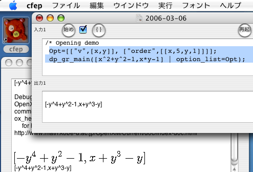
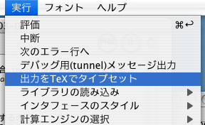
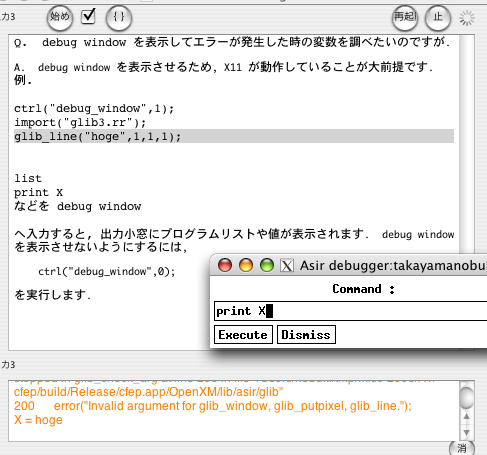

<html>
<META http-equiv="Content-Type" content="text/html; charset=iso-2022-jp">
<body>


<ul>
<li> <a href="#changelog"> cfep 1.1 $B$N?75!G=(B </a> 
<li> <a href="#whatIsCfep"> cfep$B$K$D$$$F(B </a> 
<li> <a href="#intro"> $BF~Lg(B </a> 
<li> <a href="#faq"> $BLdBj$r2r7h$9$k(B </a> 
<li> <a href="#myIndex"> $B:w0z(B($BAH$_9~$_4X?t$N>\$7$$@bL@(B) </a> 
</ul>


<hr/>

<h3 id="whatIsCfep" name="whatIsCfep"> cfep$B$K$D$$$F(B </h3>
cfep $B$O(B
"10$B?J%Y!<%7%C%/(B" $B$N%f!<%6%$%s%?%U%'!<%9$r;29M$K$7$F:n@.$7$?(B
<a href="http://www.math.kobe-u.ac.jp/OpenXM"> OpenXM </a>
$B%f!<%6%$%s%?%U%'!<%9$G$9(B (MacOS X 10.4 $B0J>eMQ(B). <br>
$BF~NOAk$K%W%m%0%i%`$J$I$rF~NO$7$F(B <font color="brown">$B;O$a(B</font> $B%\%?%s(B ($B$^$?$O(B
command+enter $B%-!<(B)$B$r$*$9$H%W%m%0%i%`$N<B9T$d7W;;$r3+;O$7(B, 
$B$=$N7k2L(B($B:G8e$NJ8$NI>2ACM(B)$B$r=PNOAk$XI=<($7$^$9(B 
(<a href="fctr.png"> $B<B9TNc(B</a>).
$BF~NOAk$NFbMF$O%j%C%A%F%-%9%H%U%!%$%k(B(rtf, rtfd)$B$H$7$F$bJ]B8$G$-$^$9(B.
$B;O$a%\%?%s$N2#$N%A%'%C%/%\%C%/%9$K%A%'%C%/$r$D$1$F$*$/$H(B, $BA*Br$7$?HO0O$N$_$r(B
$BI>2A!J7W;;$d%W%m%0%i%`$N<B9T$r(B)$B$7$^$9(B. 
$B%G%U%)!<%k%H$N7W;;%(%s%8%s$O7W;;Be?t%7%9%F%`(B
<a href="http://www.math.kobe-u.ac.jp/Asir/index-ja.html"> Risa/Asir </a>
$B$G$9(B.

<p>
<hr/>

<h3> cfep $B$N%$%s%9%H!<%k(B </h3>
$B%$%s%9%H!<%i!<$OITMW$G$9(B.
<a href="http://www.math.kobe-u.ac.jp/HOME/taka/2005/cfep/cfep.dmg.gz">
cfep $B$N%G%#%9%/%$%a!<%8(B </a> $B$r%@%&%s%m!<%I$7(B, $B$3$l$r3+$$$F(B "$B$$$N$V$?$/$s(B" $B$N%"%$%3%s(B
 $B$r9%$-$J>l=j$K%3%T!<$9$k$@$1(B.  
$B%7%9%F%`$+$i$N:o=|$O(B "$B$$$N$V$?$/$s(B" $B$r%4%_H"$X$$$l$k$@$1(B.

<hr>
<h3 id="changelog" name="changelog">
     cfep 1.1 $B$NFCD'(B (2006.03.12.)</h3>
<ol>
<li> $B%X%k%W$N=<<B(B.
<li> $B=PNO$r(B TeX $B$G%?%$%W%;%C%H$9$k%b!<%I(B, $B%N!<%H%V%C%/Iw%$%s%?%U%'!<%9(B ($B<B83E*(B).
  
</ol>
<h3> cfep 1.0 $B$NFCD'(B (2006.02.25) </h3>
<ol>
<li> Editor$B$H7W;;%(%s%8%s$NE}9g4D6-(B.
<li> OpenGL$B;EMM$N0lItJ,$r<B8=$7$?(B OpenGL $B%$%s%?%W%j%?!<$rFbB"(B ($B<B83E*(B).
   <a href="ray.png"> OpenGL$B<B9TNc(B($B%9%/%j!<%s%7%g%C%H(B)</a>   <br>
   Samples $B%U%)%k%@$N(B $B%U%!%$%k(B ray, icosahedron, simple-gl-1 $BEy$r8fMw$/$@$5$$(B.
</ol>

<hr>
<h3 id="intro" name="intro"> $BF~Lg(B </h3> 
  <a href="pdf/next2.pdf"> Cfep/asir $BD6F~Lg(B (pdf/next2.pdf) </a> <br>
  ($BFbMF(B: $BEEBn$H$7$F$NMxMQ(B. cfep $B$NA`:nJ}K!(B. 
    $B%(%i!<%a%C%;!<%8(B. $BJQ?t$H%W%m%0%i%`(B. $B%(%s%8%s$N:F5/F0(B.
   $B%X%k%W$NMxMQ(B. $B%0%i%U%#%C%/(B.  For $BJ8$K$h$k?tNs$N7W;;(B. cfep $B%$%s%?%U%'!<%9>e5iJT(B.
   $BA*BrHO0O$N$_<B9T(B. OpenGL)

<h3> <a href="http://www.math.kobe-u.ac.jp/~taka/asir-book-html/main/index.html">
     Risa/Asir$B%I%j%k(B2003 </a> $BK\3JE*F~Lg=q(B ($B%M%C%H%o!<%/(B) </h3>

<hr>
<h3 id="myIndex" name="myIndex"> $B:w0z(B($BAH$_9~$_4X?t$N>\$7$$@bL@(B) </h3>
<ol>
<li>   <a href="./">$B;HMQ@bL@=q$N%U%)%k%@$r(Bfinder$B$G3+$/(B</a>
  <table border="0" cellspaceing ="10">
  <td>
  
  <font color="red"> $B8!:w$7$?$$8@MU$r%9%]%C%H%i%$%H$NAk$XF~NO(B </font>. <br>
  $B8!:w$N%R%s%H(B: PDF$BJ8=q$N$_$+$i8!:w$7$?$$>l9g$O(B "$B8!:w8l(B  kind:pdf" $B$HF~NO(B.
  </table>
<li> cfep $B$NA`:n@bL@(B. <a href="#intro"> $BF~Lg(B </a> $B$*$h$S(B
    <a href="#QandAadvanced"> $B$h$/$"$k<ALd(B $B>e5iJT(B</a> $B$r;2>H(B.
<li> <a href="html-ja_JP.utf8/html-jp/man_toc.html">
  Risa/Asir $B%^%K%e%"%k(B </a> 
<li> <a href="html-ja_JP.utf8/html-exp-ja/exp-ja_toc.html">
  Risa/Asir$B<B83E*5!G=%^%K%e%"%k(B </a>
<li> <a href="http://www.math.kobe-u.ac.jp/OpenXM/Current/doc/index-doc-ja.html"> 
Asir $B%^%K%e%"%k(B, Asir-contrib, $B<B83E*4X?t%^%K%e%"%k$b4^$`$h$j>\$7$$4X?t0lMw(B  </a> 
($B%M%C%H%o!<%/(B)
</ol>

<hr>
<h3 id="faq" name="faq"> <font color="red"> $BNI$/$"$k<ALd(B $B=i5iJT(B </font> </h3>
<ul>
<li> <a href="#q1"> $B%j%C%A%F%-%9%H$GJ]B8$7$?%U%!%$%k(B (rtf, rtfd $B%U%!%$%k(B) $B$,(B Windows $BHG$d(B unix $BHG$N(Basir $B$G<B9T$G$-$^$;$s(B.  </a>
<li> <a href="#q2">  #include $B$d(B #define $B$,$D$+$($^$;$s(B. </a>
<li> <a href="#q3">  OpenGL$B$N%0%i%U%#%C%/2hLL$r0u:~$G$-$^$;$s(B </a>
<li> <a href="#q4">  $B%0%i%U%#%C%/$,I=<($5$l$^$;$s(B </a>
<li> <a href="#q5">  $B%0%i%U%#%C%/$NI=<($,$@$s$@$sCY$/$J$j$^$9(B </a>
<li> <a href="#q6">  Basic $B$N(B input $BJ8$K$"$?$kL?Na$O$"$j$^$9$+(B? </a>
<li> <a href="#q7"> Graphic $B2hLL$KJ8;z$r$I$N$h$&$K=q$-$^$9$+(B? </a>
</ul>

<h4 id="q1" name="q1"> Q. $B%j%C%A%F%-%9%H$GJ]B8$7$?%U%!%$%k(B (rtf, rtfd $B%U%!%$%k(B) $B$,(B Windows $BHG$d(B unix $BHG$N(B
asir $B$G<B9T$G$-$^$;$s(B. </h4>

rr $B7A<0$+(B txt $B7A<0(B ($B%F%-%9%H7A<0(B)$B$G%;!<%V$7$F$/$@$5$$(B.
cfep $B$N4A;z%3!<%I$O(B UTF-8 $B$G$9(B.
$B$7$?$,$C$F4A;z%3!<%I$NJQ49$,I,MW$J>l9g$b$"$j$^$9(B.

<h4 id="q2" name="q2"> Q. #include $B$d(B #define $B$,$D$+$($^$;$s(B. </h4>
$B$*$^$A$/$@$5$$(B.

<h4 id="q3" name="q3"> Q. OpenGL$B$N%0%i%U%#%C%/2hLL$r0u:~$G$-$^$;$s(B </h4>
$B$^$@<BAu$7$F$$$^$;$s(B. $B$H$j$"$($:$O(B "shift" $B$H(B "$B%3%^%s%I(B" $B$H(B "3" $B$r0l=o$K$*$9;v$K$h$j(B
$B%9%/%j!<%s$N%3%T!<$,%G%9%/%H%C%W$K%U%!%$%k$H$7$FJ]B8$5$l$^$9$N$G$=$l$r;H$C$F$/$@$5$$(B.
"shift" $B$H(B "$B%3%^%s%I(B" $B$H(B "4" $B$r0l=o$K$*$9;v$G(B $B%^%&%9$G%I%i%C%0$7$?HO0O$N$_$r%U%!%$%k$KJ]B8$G$-$^$9(B.
$B%3%^%s%I%i%$%s$+$i$O(B screencapture $B%3%^%s%I$rMQ$$$^$9(B.

<h4 id="q4" name="q4"> Q. $B%0%i%U%#%C%/$,I=<($5$l$^$;$s(B </h4>
$B860x$O$$$m$$$mA[Dj$5$l$^$9$,(B, $B0lHV$h$/$"$k$N$O(B flush $B7O$NL?Na$,<B9T$5$l$F(B
$B$$$J$$>uBV$G$9(B.
glib_flush $B$^$?$O(B OpenGL $B$N(B glFlush $B%3%^%s%I$,<B9T$5$l$k$^$G(B,
$B<B:]$NI=<($O$5$l$^$;$s(B.
OpenGL$B$N(B Window $B$rF0$+$7$?$j$9$k$H(B, $B$3$l$i$N%3%^%s%I$r<B9T$7$?$N$H6a$$>uBV$K$J$k$N$G(B,
$BI=<($5$l$k$3$H$,$"$j$^$9(B.

<h4 id="q5" name="q5">  $B%0%i%U%#%C%/$NI=<($,$@$s$@$sCY$/$J$j$^$9(B. </h4>
$B$?$/$5$s$NE@$r$&$C$?$j$9$k$H(B OpenGL $B%$%s%?%W%j%?$N9=B$>e$NFC@-$+$i%a%b%j$rO2Hq$7(B,
$BF0:nB.EY$NDc2<$r$^$M$-$^$9(B.
$BITI,MW$J(B OpenGL $B%0%i%U%#%C%/%*%V%8%'%/%H$r>C$7$F$*$/$N$,8zN(E*MxMQ$K$OI,MW$G$9(B.
glib $B7O$G$O(B glib_remove_last(); $B%3%^%s%I$,0l$DA0$N(B OpenGL $B%0%i%U%#%C%/%*%V%8%'%/%H$r>C$7$^$9(B.

<h4 id="q6" name="q6">  Basic $B$N(B input $BJ8$K$"$?$kL?Na$O$"$j$^$9$+(B? </h4>
$B=`HwCf$G$9(B. 
$B0J2<$N$h$&$J%W%m%0%i%`$G$"$kDxEY$NBeMQ$K$K$J$k$+$b$7$l$^$;$s$,HK;($G$9$M(B.
<pre>
for (I=0; I<5; I++) {
 print("xterm $B$K?t$rF~NO$7$F$/$@$5$$(B");
 shell("/usr/X11R6/bin/xterm -exec pico /tmp/abc.txt");
 F=open_file("/tmp/abc.txt","r");
 S=get_line(F);
 V=eval_str(S);
 print(V,0); print(" $B$rF~NO$7$^$7$?$M(B.");
 close_file(F);
 shell("rm -f /tmp/abc.txt");
}
</pre>
      

<h4 id="q7" name="q7"> Graphic $B2hLL$KJ8;z$r$I$N$h$&$K=q$-$^$9$+(B? </h4>
$B$3$N5!G=$b=`HwCf$G$9(B. $B$H$j$"$($:$O(B line $BL?Na$rAH$_9g$o$;$F=q$/$7$+$J$$$G$9(B.

<h3 id="QandAadvanced" name="QnadAadvanced"> 
<font color="magenta"> $BNI$/$"$k<ALd(B $B>e5iJT(B </font> </h3>

<ul>
<li> <a href="#aq1"> asir $B0J30$N7W;;%(%s%8%s$O@\B3$G$-$^$9$+(B? </a>
<li> <a href="#aq2">  cfep $B$O$I$N$h$&$J8@8l$G=q$+$l$F$$$^$9$+(B? </a>
<li> <a href="#aq3">  $B%3%^%s%I%i%$%sHG(B asir $B$O4^$^$l$F$$$^$9$+(B? </a>
<li> <a href="#aq4">  Asir-contrib $B$G%m!<%I$5$l$k%U%!%$%k$rJQ99$7$?$$(B. </a>
<li> <a href="#aq5"> OpenXM $B%5!<%P$,<B9T$5$l$k;~$N(B PATH $B4D6-JQ?t$NCM$rJQ$($?$$(B.</a>
<li> <a href="#aq6"> TeX $B$r%$%s%9%H!<%k$7$F$"$k$N$K(B tex $B$G%?%$%W%;%C%H$G$-$^$;$s(B</a>
<li> <a href="#aq-2006-03-11-debug-window"> debug window $B$rI=<($7$F%(%i!<$,H/@8$7$?;~$NJQ?t$rD4$Y$?$$$N$G$9$,(B.</a>
<li> <a href="#aq-2006-03-11-a"> glib $B$G(B OpenGL $B$G$J$/(B X11 $B$r;H$$$?$$(B. </a>
</ul>

<h4 id="aq1" name="aq1"> Q. asir $B0J30$N7W;;%(%s%8%s$O@\B3$G$-$^$9$+(B? </h4>
OpenXM 100, 103 $B%W%m%H%3%k$r%5%]!<%H$7$F$$$k7W;;%(%s%8%s$J$i@\B32DG=$G$9(B.
$B7W;;%(%s%8%s$H$O(B ox_texmacs $B$r2p$7$F@\B3$7$F$$$^$9(B.
$B5/F0%9%/%j%W%H$O%j%=!<%9$K$J$C$F$$$^$9(B.
1.1 $B0J9_$O(B kan/sm1 $B$N5/F0$b%a%K%e!<$KAH$_9~$^$l$F$$$^$9(B.

<h4 id="aq2" name="aq2"> Q. cfep $B$O$I$N$h$&$J8@8l$G=q$+$l$F$$$^$9$+(B? </h4>
Cocoa $B%D!<%k%-%C%H$rMQ$$$F(B objective C $B$G=q$+$l$F$$$^$9(B.
$B%=!<%9%3!<%I$O(B 
<a href="http://www.math.kobe-u.ac.jp/cgi/cvsweb.cgi"> 
OpenXM $B$N(B cvsweb </a> $B$N(B OpenXM/src/cfep $B$r8fMw$/$@$5$$(B.

<h4 id="aq3" name="aq3"> Q.  $B%3%^%s%I%i%$%sHG(B asir $B$O4^$^$l$F$$$^$9$+(B? </h4>
cfep.app/OpenXM/bin $B$K$"$j$^$9(B.
cfep.app/OpenXM/rc $B$N2<$G(B make $B$rF0$+$7$F(B openxm $B%9%/%j%W%H$r@8@.$7$F$/$@$5$$(B.
$B4D6-JQ?t$r<+F0@_Dj$7$^$9(B.
openxm asir $B$G(B OpenXM$BHG$N(B asir $B$,5/F0$7$^$9(B.

<h4 id="aq4" name="aq4"> Q.  Asir-contrib $B$G%m!<%I$5$l$k%U%!%$%k$rJQ99$7$?$$(B. </h4>
cfep.app/OpenXM/rc/asirrc $B$rJT=8(B.

<h4 id="aq5" name="aq5"> Q. OpenXM $B%5!<%P$,<B9T$5$l$k;~$N(B PATH $B4D6-JQ?t$NCM$rJQ$($?$$(B.</h4>
$B$A$g$C$HN"5;$G$9$,(B, $B8@8lKh$N%j%=!<%9$G(B PATH $B$NCM$r@_Dj$9$k$3$H$GJQ99$7$^$9(B.
$BF|K\8l4D6-$J$i(B
cfep.app/Contents/Resource/Japanese.lproj/Localizable.strings
$B$K(B utf16 $B$G(B "PATH"="PATH$B4D6-JQ?t$NCM(B";  $B$r2C$($^$9(B.
(Prefererece $B$GJQ$($k$3$H$,$G$-$k$h$&$K$9$kM=Dj(B).
$B;2>H(B: cfep/MyEnvironment.m,  initFor:

<h4 id="aq6" name="aq6"> Q. TeX $B$r%$%s%9%H!<%k$7$F$"$k$N$K(B tex $B$G%?%$%W%;%C%H$G$-$^$;$s(B</h4>
cfep $B$O(B /sw/bin (fink) $B$K(B tex $B$,B8:_$7$F$$$k$H2>Dj$7$F$^$9(B.
$B>\$7$/$O(B cfep/MyEnvironment.m, initFor: $B$r$_$F$/$@$5$$(B.

<h4 id="aq-2006-03-11-debug-window" name="aq-2006-03-11-debug-window"> 
 Q.  debug window $B$rI=<($7$F%(%i!<$,H/@8$7$?;~$NJQ?t$rD4$Y$?$$$N$G$9$,(B.</h4>
<pre>
debug window $B$rI=<($5$;$k$?$a(B, X11 $B$,F0:n$7$F$$$k$3$H$,BgA0Ds$G$9(B.
$BNc(B 
ctrl("debug_window",1);
import("glib3.rr");
glib_line("hoge",1,1,1);

list
print X
$B$J$I$r(B debug window 
   
$B$XF~NO$9$k$H(B, $B=PNO>.Ak$K%W%m%0%i%`%j%9%H$dCM$,I=<($5$l$^$9(B.  debug window $B$rI=<($5$;$J$$$h$&$K$9$k$K$O(B,

    ctrl("debug_window",0);

$B$r<B9T$7$^$9(B.  
$B$J$*$3$l$ON"5;E*5!G=$G$9(B. $B>-MhE*$K$O(B OpenXM $B$N(B error packet $B$K$h$j(B, cfep $B$HM;9g$7$?7A$G=hM}$9$kM=Dj$G$9(B.
</pre>

<h4 id="aq-2006-03-11-a" name="aq-2006-03-11-a"> glib $B$G(B OpenGL $B$G$J$/(B X11 $B$r;H$$$?$$(B. </h4>
$BN"5;E*J}K!$G$9$,(B,
<pre>
Cfep_loaded = 0;
</pre>
$B$H$7$F$*$/$H(B, X11 $B$GIA2h$5$l$^$9(B.
$BBgNL$NE@$r%W%m%C%H$9$k>l9g(B OpenGL $B%$%s%?%W%j%?$N9=B$>e%a%b%j$rO2Hq$9$k$N$G(B, 
$B$3$N$h$&$J>l9g$O(B X11 $B$GIA2h$9$k$Y$-$G$7$g$&(B.


</body>
</html>
